Load the data from the file trajectory.csv. The data consists of three rows representing a trajectory. The first row represents time, the second row represents the \(x\)-coordinate at each timestep, and the third row represents the \(y\)-coordinate.
Q1 a (3 marks)
Plot the \(x\)-coordinate against time (i.e., t-x figure) and also for the \(y\)-coordinate (i.e., t-y figure). Also plot the trajectory in 2D (i.e., x-y figure).
You need to respectively use variables ‘t’, ‘x’, ‘y’ to represent time, x-coordinate, and y-coordinate, as these variables will be needed in other questions.
Include clear titles, axis labels, and legends for all figures.
import numpy as npimport matplotlib.pyplot as pltimport pandas as pd# read from trajectory.csvdata = np.loadtxt("trajectory.csv", delimiter=",", skiprows=1, usecols=range(1, 201))t = data[0]x = data[1]y = data[2]# plot x coordinate vs timeplt.figure()plt.plot(t, x, label="x(t)")plt.title("Time vs X-coordinate")plt.xlabel("Time (t)")plt.ylabel("X-coordinate")plt.legend()plt.grid()plt.show()# plot y coordinate vs timeplt.figure()plt.plot(t, y, label="y(t)", color="orange")plt.title("Time vs Y-coordinate")plt.xlabel("Time (t)")plt.ylabel("Y-coordinate")plt.legend()plt.grid()plt.show()# plot x coordinate vs y coordinateplt.figure()plt.plot(x, y, label="Trajectory")plt.title("2D Trajectory (X vs Y)")plt.xlabel("X-coordinate")plt.ylabel("Y-coordinate")plt.legend()plt.grid()plt.show()
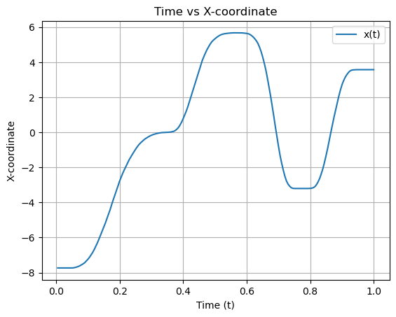
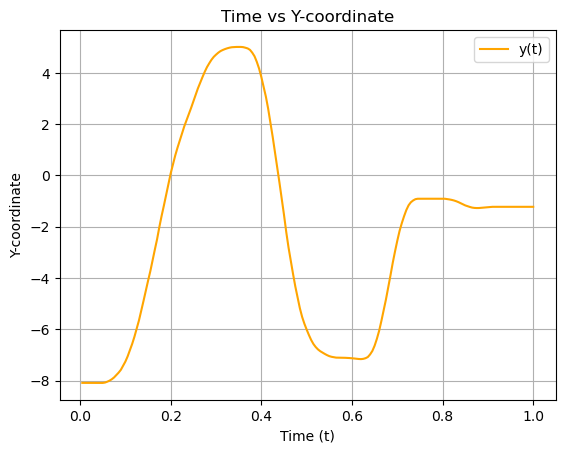
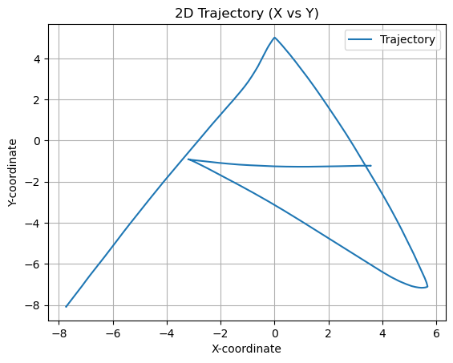
Linear regression using polynomial basis functions
Q1 b (6 marks)
Use your t, x, and y variables from Q1 a.
Implement polynomial_basis_function(t, basis_num) to return a polynomial design matrix.
Use linear regression with your basis function (for Q1 b, use basis_num = 15) to fit the 2D trajectory data (x, y). Note that the bias term should be added in your fitting.
Generate predicted trajectories for both coordinates across all time points.
Plot and compare on the same axes:
original x and predicted x against t,
original y and predicted y against t,
original and predicted trajectories in the x-y plane.
Include clear titles, axis labels, and legends for all figures.
def polynomial_basis_function(t, basis_num):""" Compute the polynomial basis function for the given time vector and number of basis functions. Parameters: t (numpy array): Time vector of shape (N,). basis_num (int): Number of polynomial basis functions. Returns: numpy array: Design matrix of shape (N, basis_num) where each row corresponds to one data sample. """ t=np.asarray(t) N=t.shape[0] phi=np.zeros((N,basis_num)) # initializing the design matrix with zerosfor i inrange(basis_num): # i=0,1,...,basis_num-1 phi[:,i]=t**i # phi[:,0]=t**0=1, phi[:,1]=t**1=t, phi[:,2]=t**2, ...return phiraiseNotImplementedError("Please implement the polynomial_basis_function function.")
Fitting the linear regression model using the polynomial basis function
basis_num =15# We can change this value to use a different number of basis functionsPhi = polynomial_basis_function(t, basis_num)# Compute the weights for x and yw_x = np.linalg.pinv(Phi) @ xw_y = np.linalg.pinv(Phi) @ y#Predict the x and y coordinates using the fitted modelx_pred = Phi @ w_xy_pred = Phi @ w_y
Plots
fig,axes=plt.subplots(1,3,figsize=(12,5))# Plot the original and predicted x coordinate vs timeaxes[0].plot(t, x, label="Original x(t)") # Plot original x(t)axes[0].plot(t, x_pred, label="Predicted x(t)", linestyle="dashed") # Add predicted x(t) to the plotaxes[0].set_title("Time vs X-coordinate")axes[0].set_xlabel("Time")axes[0].set_ylabel("X-coordinate")axes[0].legend()axes[0].grid()# Plot the original and predicted y coordinate vs timeaxes[1].plot(t, y, label="Original y(t)", color="orange") # Plot original y(t)axes[1].plot(t, y_pred, label="Predicted y(t)", linestyle="dashed", color="red") # Add predicted y(t) to the plotaxes[1].set_title("Time vs Y-coordinate")axes[1].set_xlabel("Time")axes[1].set_ylabel("Y-coordinate")axes[1].legend()axes[1].grid()# Plot the original and predicted trajectoryaxes[2].plot(x, y, label="Original Trajectory") # Plot original trajectoryaxes[2].plot(x_pred, y_pred, label="Predicted Trajectory", linestyle="dashed", color="red") # Add predicted trajectory to the plotaxes[2].set_title("2D Trajectory (X vs Y)")axes[2].set_xlabel("X-coordinate")axes[2].set_ylabel("Y-coordinate")axes[2].legend()axes[2].grid()plt.tight_layout()plt.show()
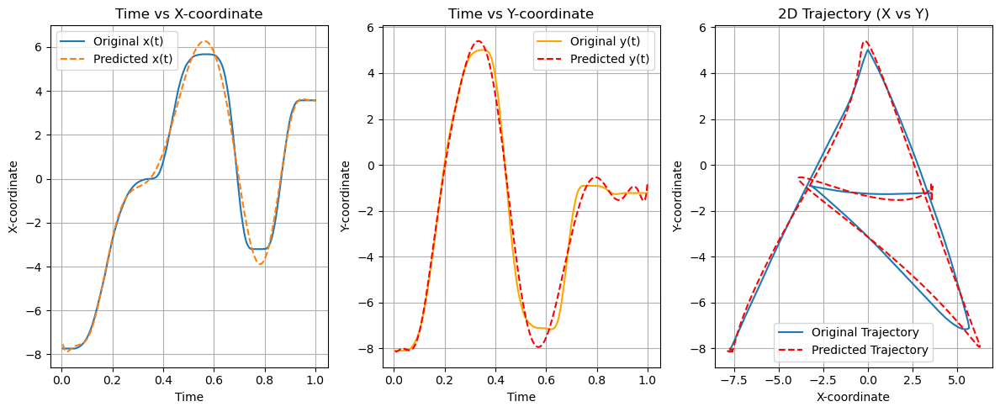
Q1 c (3 marks)
Using the polynomial basis model, plot the fitted trajectories for basis_num = 2, 5, 10 and briefly compare how fit quality changes as the number of basis functions increases.
Include clear titles, axis labels, and legends for all figures.
basis_nums = [2, 5, 10] # creating a listfig, axes = plt.subplots(1, 3, figsize=(12, 5)) # creating a figure with 1 row and 3 columns of subplotsfor i, num inenumerate(basis_nums): # iterating over the list of basis numbers and their corresponding subplot index Phi = polynomial_basis_function(t, num) w_x = np.linalg.pinv(Phi) @ x w_y = np.linalg.pinv(Phi) @ y x_pred = Phi @ w_x y_pred = Phi @ w_y# Plot original axes[i].plot(x, y, label="Original trajectory")# Plot prediction axes[i].plot(x_pred, y_pred, linestyle="--", label=f"Predicted (basis={num})") axes[i].set_title(f"Fitted Trajectory (Basis Num = {num})") axes[i].set_xlabel("X") axes[i].set_ylabel("Y") axes[i].legend() axes[i].grid()plt.tight_layout()plt.show()
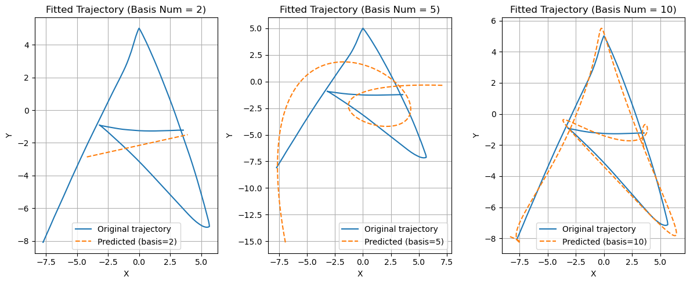
Effect of Increasing Polynomial Basis Functions
The model becomes more flexible as the number of polynomial basis functions rises.
Basis = 2: The model is too simple and underfits the data. It cannot capture the curved structure of the trajectory.
Basis = 5: The model begins to poorly capture the overall shape of the trajectory.
Basis = 10: The model gives a considerably better match and closely resembles the actual trajectory, capturing minute aspects of the motion. Nevertheless, overfitting—a situation in which the model begins to match noise rather than the actual underlying pattern—may result from increasing basis functions too much.
Question 2
Given a set of basis functions (sine, cosine, exponential, polynomial, and radial basis functions), select and combine appropriate ones to construct a suitable basis function vector for linear regression.
Find the smallest number of basis functions that provides a good fit to the following trajectories.
Q2 a (5 marks)
Consider what basis functions might be suitable to model the data in “q2_a_data.npy”. In this file, the first column is time t while the second column is the x-coordinate. You should be able to achieve a good fit with a small number of basis functions.
Tasks: 1. Choose and implement your basis function combination. You may decide whether to include a bias term depending on your fitting performance. 2. Plot your prediction and the original data in the same figure (i.e., t-x). 3. Calculate and report the Mean Squared Error (MSE) for your fit. 4. Justify your choice of basis functions.
Include clear titles, axis labels, and legends for all figures.
import numpy as npimport matplotlib.pyplot as pltfrom matplotlib.ticker import MultipleLocator# plot the trajectorydata = np.load("q2_a_data.npy") # size: 200*2, the first column is time input while the second column is x-coordinate.t = data[:, 0]target = data[:, 1]plt.plot(t, target, label='target')ax = plt.gca()ax.xaxis.set_major_locator(MultipleLocator(1)) # tick interval = 1plt.legend()plt.grid()plt.xlabel("t")plt.ylabel("x")plt.show()
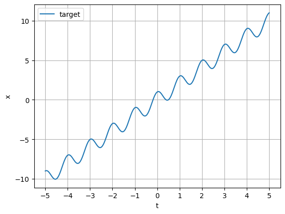
Basis Function Selection and Justification
From the above graph, we can see that trajectory exhibits two key characteristic. First, there is a clear linear increasing trend. Second, periodic oscillations can be observed which match with pattern of trigonometric basis functions . In this case, a combination of polynomial and sine and cosine basis functions can be selected to model this behaviour.
The linear component is captured using a first-degree polynomial term ( t ), whilst the periodic behaviour is modelled using sine and cosine functions. Moreover, a bias term is included to allow vertical shifting of the function.
Initially, only a sine function was used to represent the oscillatory component. However, this resulted in a poor fit due to a phase mismatch between the model and the data. So a cosine function was added and the model fit improved noticeably. It means the data contains a phase shift.
This combination provides an accurate fit with a small number of basis functions. Beside that, a minor Mean Squared Error (MSE) was achived which proves the correct model selection.
from sklearn.metrics import mean_squared_error# Choosing frequency from the plot, we can see that the period is approximately 1, so we set omega = 2 * pi / 1omega =2* np.pi /1.0# assuming period ≈ 1# Design matrix with combination of sine, cosine, linear and bias termsPhi = np.column_stack([ np.ones_like(t), # bias t, # linear trend np.sin(omega * t), # sine term np.cos(omega * t) # cosine term])# Computing weights (Normal Equation)w = np.linalg.inv(Phi.T @ Phi) @ Phi.T @ target# Predicting the outputy_pred = Phi @ w# MSEmse = mean_squared_error(target, y_pred)print("MSE:", mse)
MSE: 1.4818567215302045e-30
Plot
For the visualisation the following graph was produced:
Similar to Q2 a, please read data from “q2_b_data.npy”, and do the following:
Choose and implement your basis function combination. You may decide whether to include a bias term depending on your fitting performance.
Plot your prediction and the original data in the same figure (i.e., t-x).
Calculate and report the Mean Squared Error (MSE) for your fit.
Justify your choice of basis functions.
Include clear titles, axis labels, and legends for all figures.
# plot the trajectorydata = np.load("q2_b_data.npy") # size: 200*2, the first column is time input while the second column is x-coordinate.t = data[:, 0]target = data[:, 1]plt.plot(t, target, label='target')ax = plt.gca()ax.xaxis.set_major_locator(MultipleLocator(1)) # tick interval = 1plt.legend()plt.grid()plt.xlabel("t")plt.ylabel("x")plt.show()
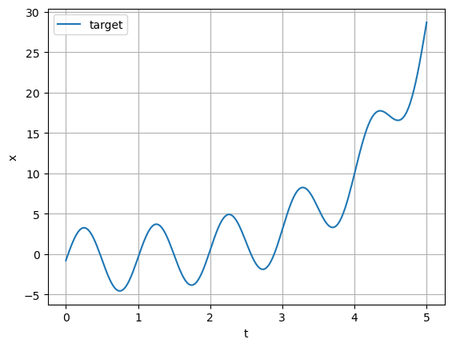
Choice of Basis Functions
The basis functions were chosen based on the observed behaviour of the data above:
Exponential term\(e^{\alpha t}\): captures the overall growth/decay trend
Sine and cosine terms\(\sin(\omega t)\), \(\cos(\omega t)\): capture periodic (oscillatory) patterns
Bias term\(1\): allows vertical shifting of the model
For each \((\alpha, \omega)\): \[
\Phi = [1,\ e^{\alpha t},\ \sin(\omega t),\ \cos(\omega t)]
\]
Compute Weights
Weights are estimated using the pseudoinverse: \[
w = \Phi^{+} y
\]
Make Predictions
\[
\hat{y} = \Phi w
\]
Evaluate Model
We compute Mean Squared Error (MSE): \[
\text{MSE} = \frac{1}{n} \sum (y - \hat{y})^2
\]
Grid Search
We test multiple values of \(\alpha\) and \(\omega\) and select the pair that minimises MSE.
Final Model
Using the best parameters: \[
y(t) = w_0 + w_1 e^{\alpha t} + w_2 \sin(\omega t) + w_3 \cos(\omega t)
\]
Results
Best \(\alpha \approx 0.997\)
Best \(\omega \approx 6.278\)
Very low MSE → model fits the data well
# load datadata = np.load("q2_b_data.npy")t = data[:, 0]y = data[:, 1]# searching for best alpha and omegaalphas = np.linspace(0.1, 1.5, 40) # exponential growthomegas = np.linspace(4, 10, 80) # frequencybest_mse =float("inf") # initializing best MSE to infinitybest_params =None# to store the best (alpha, omega) pair best_w =None# in t and y, we have 200 data points, so the design matrix Phi will be of shape (200, 4) since we have 4 basis functions: bias, exponential, sine and cosine.for alpha in alphas:for omega in omegas: Phi = np.column_stack([ np.ones_like(t), np.exp(alpha * t), # exponential growth term np.sin(omega * t), # sine term np.cos(omega * t) # cosine term ])# solving weights using pseudo-inverse w = np.linalg.pinv(Phi) @ y y_pred = Phi @ w mse = mean_squared_error(y, y_pred) # compute MSE for current parametersif mse < best_mse: #finding the best parameters based on MSE best_mse = mse best_params = (alpha, omega) best_w = w# rebuild model with best paramsalpha_best, omega_best = best_paramsPhi_best = np.column_stack([ np.ones_like(t), np.exp(alpha_best * t), np.sin(omega_best * t), np.cos(omega_best * t)])y_pred = Phi_best @ best_w # predict using the best model# print resultsprint("Best alpha:", alpha_best)print("Best omega:", omega_best)print("Best MSE:", best_mse)
Best alpha: 0.9974358974358973
Best omega: 6.2784810126582276
Best MSE: 0.0004821249307333702
Plot
The fit of our model can be seen in the follwing graph showing original and predicted data together:
plt.plot(t, y, label="target") # plot original dataplt.plot(t, y_pred, '--',label="prediction") # plot predictionplt.xlabel("t")plt.ylabel("x")plt.title("Optimised Basis Function Regression")plt.legend()plt.grid()ax = plt.gca()ax.xaxis.set_major_locator(MultipleLocator(1))plt.show()
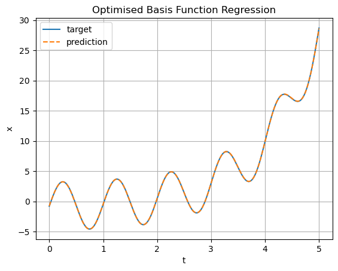
Question 3
Q3 a (4 marks)
You are given a data array called “shape_array.npy” that comprises 7 samples organised as columns in the array, where each column corresponds to one sample. The data format in each column is: [x_1, y_1, z_1, x_2, y_2, z_2, ………, x_N, y_N, z_N], where (x_i, y_i, z_i) corresponds to the i-th 3D point of a blood vessel. By plotting all 3D points in one column, you can obtain the shape of a blood vessel of that sample.
Plot seven figures to show the 3D blood vessel shape for each sample separately. Also plot two arbitrary shapes on top of each other to get a feeling of how similar or dissimilar the shapes are.
import numpy as npimport matplotlib.pyplot as pltfrom mpl_toolkits.mplot3d import Axes3D # 3D plotting toolkit# load datadata = np.load("shape_array.npy")num_samples = data.shape[1] # 7 samples (columns)# Plotting each blood vessel sample in 3Dfor i inrange(num_samples): sample = data[:, i] # reshape the sample to have 3 columns (x, y, z) points = sample.reshape(-1, 3) # reshaping to (N, 3) where N is the number of points in the blood vessel fig = plt.figure() ax = fig.add_subplot(111, projection='3d') ax.plot(points[:, 0], points[:, 1], points[:, 2]) ax.set_title(f"Blood Vessel Sample {i+1}") plt.show()# Overlying two random samplessample1 = data[:, 0].reshape(-1, 3) sample2 = data[:, 1].reshape(-1, 3)fig = plt.figure()ax = fig.add_subplot(111, projection='3d')ax.plot(sample1[:, 0], sample1[:, 1], sample1[:, 2], label="Sample 1")ax.plot(sample2[:, 0], sample2[:, 1], sample2[:, 2], label="Sample 2")ax.set_title("Overlay of Two Blood Vessel Shapes")ax.legend()plt.show()
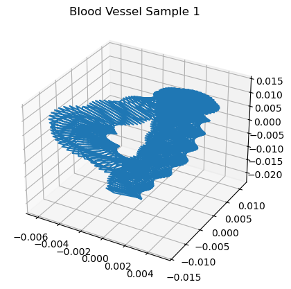
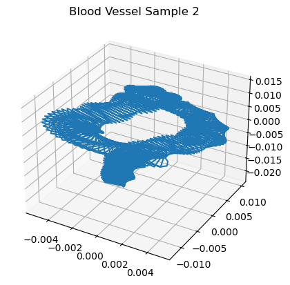
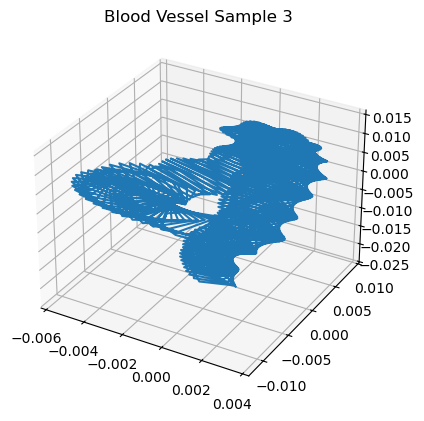
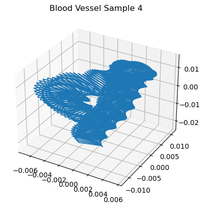
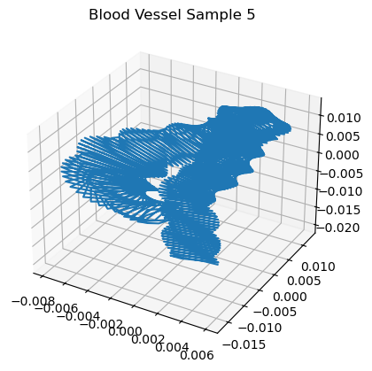
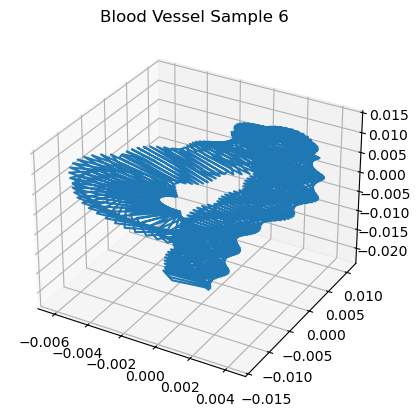
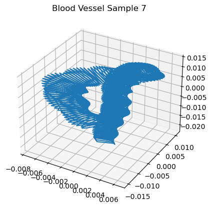
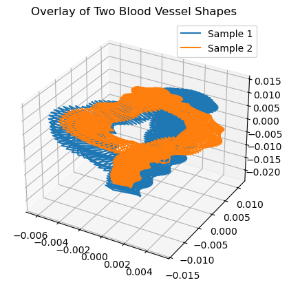
Q3 b (10 marks)
Next, perform eigendecomposition of the covariance matrix estimated from the given data array. Finally, project original data onto lower-dimensional space and reconstruct data.
Proceed as follows:
Subtract the mean from the data, so that it is centered around the origin.
Estimate the covariance matrix from the centred data.
Calculate eigenvectors and eigenvalues using numpy functions
Project centered data (1845 dimension) into 5 dimension.
Reconstruct the blood vessel shape from the lower dimension data in step 4.
As a sanity check plot a blood vessel shape reconstructed from the eigenvectors on top of the original blood vessel shape. Comment on your results.
# Mean Centeringmean_shape = np.mean(data, axis=1, keepdims=True)data_centered = data - mean_shape# Estimating covariance matrixcov_matrix = np.cov(data_centered)# Calculating eigenvalues and eigenvectorseigenvalues, eigenvectors = np.linalg.eigh(cov_matrix)# sort eigenvalues and eigenvectors in descending orderidx = np.argsort(eigenvalues)[::-1]eigenvalues = eigenvalues[idx]eigenvectors = eigenvectors[:, idx]# Projecting data onto top k eigenvectorsk =5U_k = eigenvectors[:, :k] # (1845, 5)projected_data = U_k.T @ data_centered # (5, 7)# Reconstructing the data from the projectionreconstructed_data = (U_k @ projected_data) + mean_shape# Plotting one samplei =0original = data[:, i].reshape(-1, 3)reconstructed = reconstructed_data[:, i].reshape(-1, 3)fig = plt.figure()ax = fig.add_subplot(111, projection='3d')ax.plot(original[:,0], original[:,1], original[:,2], label="Original")ax.plot(reconstructed[:,0], reconstructed[:,1], reconstructed[:,2], linestyle='dashed', label="Reconstructed")ax.legend()plt.show()
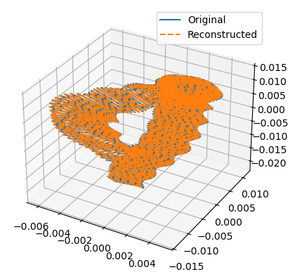
Summary
The figure shows nearly total overlap between the actual and simulated blood vessel shapes. This suggests that the majority of the dataset’s variation is captured by the first five primary components.
The blood vessel forms appear to be in a low-dimensional subspace, which can be effectively described with just a few basis directions, according to a minor reconstruction error.
The discarded lower-variance eigenvectors, which possibly contain a noise or fine-scale features, are responsible for any small variations between the original and reconstructed shapes.
Q3 c (4 marks)
Research PCA analysis using the scikit-learn library. Perform PCA analysis and show the reconstructed data of any blood vessel shape on top of the original blood vessel shape. There are variables in the PCA object that correspond to the eigenvalues used for choosing projection eigenvectors. Compare the eigenvalues and eigenvectors you have computed in the previous question with the eigenvalues and the eigenvectors computed by the scikit-learn library. Compare the reconstructed coordinates from both methods. Comment on your results.
From the printed results, it is obvious that the eigenvalues obtained from manual eigendecomposition and sklearn PCA are almost identical for the dominant components. This means that both methods capture the same variance structure in the data. Minor differences may appear in smaller eigenvalues because of numerical precision. Moreover sklearn uses a more stable SVD-based implementation. The presence of near-zero eigenvalues indicates that the data lies in a lower-dimensional subspace, which in turn shows that dimensionality reduction is effective.